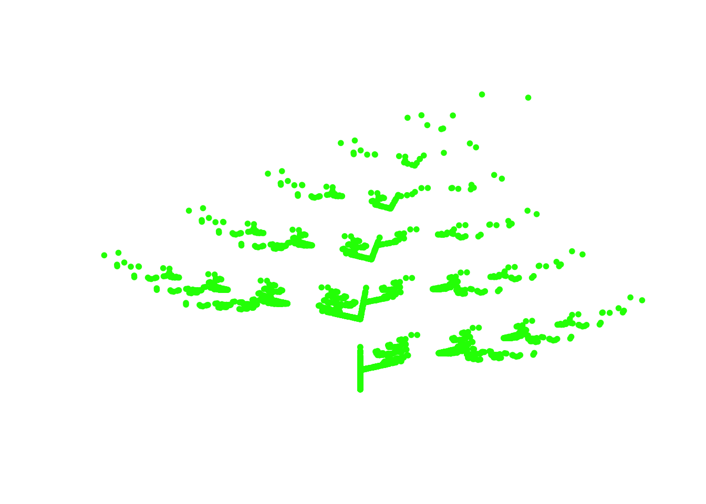
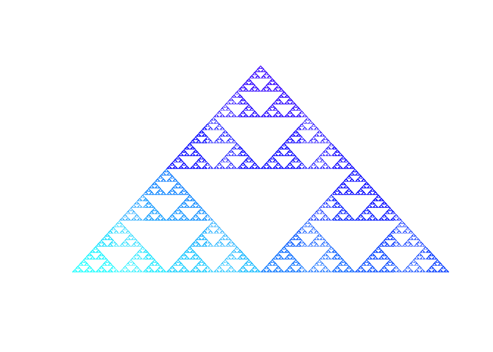

The package creates an objects of class IFS (class defined in the package) and generates plots of these objects. Class IFS is defined as a list of functions (contractions) which is used to generate fractals.
Functionality of the package will be shown in this vignette.
The function checks if its argument is a list of functions from \(\mathbb{R}^2\) to \(\mathbb{R}^2\). Otherwise it returns error. This function can be used by a user in his code but also it is used in the function createIFS described below.
The function creates the IFS (Iterated Function System) object from its argument. An object of class IFS is the representation of a fractal. Our package allows to generate an image of this fractal using generic function plot.
Returns a palette of colours which allows to plot the fractal in gradually changing colours. The function cool_colours creates a vector of colours to put as a col parameter in plot.IFS. The length of this vector is equal \(n^d\), where \(n\) is a number of functions making a fractal and \(d\) denotes density of a fractal. The other arguments in cool_colors are parameters of the rainbow function (see ? rainbow).
To make a fractal, the user needs to create a list of functions from \(\mathbb{R}^2\) to \(\mathbb{R}^2\). An example below shows functions creating Sierpi?ski triangle.
sierpinski_1 <- function(x){
c(x[1]/2,x[2]/2)
}
sierpinski_2 <- function(x){
c(x[1]/2+0.5, x[2]/2)
}
sierpinski_3 <- function(x){
c(x[1]/2+0.25, x[2]/2+0.4330127)
}
sierpinski_list <- list(sierpinski_1,sierpinski_2,sierpinski_3)Our package contains four list creating fractals: Sierpinski triangle, Heighway dragon, Koch snowflake and Barnsley’s fern.
Having the list of functions, the user needs to create an IFS object by using IFSpakietJKM package.
library(IFSpakietJKM)
sierpinski_triangle <- createIFS(sierpinski_list)barnsley <- createIFS(fern)
plot(barnsley, d=6, col="green", pch=20)
blue <- cool_colours(3,8, start=1/2, end=5/7)
plot(createIFS(triangle), col=blue)